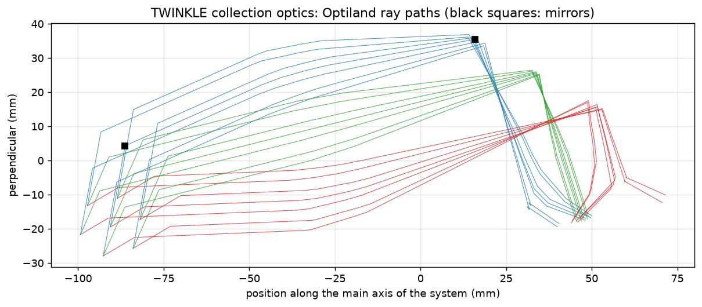

Optiland vs Zemax
TWINKLE collection optics: Optiland against Zemax
The fluorescence collection optics of the TWINKLE microscope: an 18.4 mm entrance pupil, a 45° fold mirror, an achromat pair, a dichroic mirror, a filter, an aspheric condenser and a 2.5 mm detector aperture, for fields up to 12°. Optiland's ray tracing reproduces Zemax's stored semi-diameters and, with the Zemax apertures applied, its relative-illumination roll-off.
- System layout drawing. The ray-path plot has no lenses and its projection is unreliable, so it does not show the real layout. Treat it as a debugging aid only. Cause: our own plotting is inadequate (this repo); Optiland's 2D draw also fails on folded systems (issue 9).
- Zemax apertures on import. Not applied by 0.6.3, so we clip by hand to get relative illumination. Possibly fixed on Optiland main (#928, #931, #1016); not yet re-tested. Cause: Optiland's Zemax reader (issue 11).
Zemax check: verdict by quantity
Zemax stores, for every surface whose semi-diameter is automatic, the largest ray radius it computed. We re-trace the same file in Optiland (all fields and wavelengths, 40-ring hexapolar pupil) and take the largest local ray radius. Those values come from the file itself, so they are exact Zemax output, not read off a plot. Status is computed from the tolerances in comparison.json: match within 0.5%, partial within 5%. Relative illumination is compared with the Zemax plot (see below).
| Quantity | Zemax | Optiland | Difference | Result |
|---|---|---|---|---|
| Semi-diameter, surface 10 (DICHROIC MIRROR) (mm)Zemax: DIAM stored in the .ZMX (computed by Zemax) | 22.8384 | 22.8384 | 0.00% | Match |
| Semi-diameter, surface 17 (mm)Zemax: DIAM stored in the .ZMX (computed by Zemax) | 29.2835 | 29.2792 | 0.01% | Match |
| Field angle where relative illumination falls to 50% (deg)Zemax: RelativeIllumination.svg, read from the plot vector data (digitised) | 9.06 | 8.96 | 0.1012 | Match |
| Field angle where relative illumination reaches 0 (deg)Zemax: RelativeIllumination.svg, read from the plot vector data (digitised) | 10.71 | 10.65 | 0.0564 | Match |
| Mean |Zemax RI − Optiland pupil fraction|, 0 to 12° (21 points)Zemax: RelativeIllumination.svg, read from the plot vector data (digitised) | 0.00 | 0.03 | 0.0332 | Partial |
Relative illumination
Roll-off matchesMean offset partialZemax's relative-illumination plot for field 0° to 12° at 0.546 µm. Optiland has no relative-illumination analysis, so we count the fraction of pupil rays that pass inside every clear or floating aperture that Zemax declares (circles at each surface, in its local frame). That ignores the cos-law terms Zemax includes, which are a few per cent here. The Zemax curve ripples by about ±3% from its own sampling, so we compare where the curve falls through 50% and where it reaches zero, plus the mean difference.


Zemax falls through 50% at 9.06° and reaches zero at 10.71°. Optiland's pupil fraction does the same at 8.96° and 10.65°, within 0.1°. The mean absolute difference over the 21 Zemax points is 0.033, about the size of Zemax's own ripple. Note the beam is already clipped at 8°: the 2.5 mm detector aperture and the 12.7 mm condenser limit the field, not the 25 mm lenses.
Optiland detail: what works
| Requirement | Status | Notes |
|---|---|---|
| Load the file (aspheric surface, mirror, 8 fields) | Works | Loads, all 14 surfaces. |
| Semi-diameter on automatic surfaces | Works | Both within 0.02%. |
| Clipping by Zemax apertures (relative illumination) | Works, by hand | Optiland does not apply the Zemax CLAP/FLAP apertures on import, so the pupil fraction is counted here from local ray radii. |
| RMS spot vs field | Works | Geometric. This is a non-imaging system, so no Airy comparison. |
| EFL | Works | 2297 mm. Not a meaningful figure for a collector, and there is no Zemax value to compare. |
| Strehl, wavefront | Not meaningful | Runs, but the design does not form a sharp image (Strehl 0.003); the detector is meant to collect, not resolve. |
| System layout drawing | Not working | No lenses; unreliable projection. See the top of the page. |
| Optiland 3D viewer | Unverified | Looks plausible, but not checked against the Zemax layout. |
System layout
Not workingThis drawing is not a reliable picture of the system. It has no lenses, and rays are projected onto a single best-fit plane, which distorts systems that fold in more than one plane. Rays kink at every refracting surface because nothing draws the glass. It is kept only to show the ray coordinates are present.

Interactive 3D
 Loading 3D model…
Loading 3D model…
The scene from Optiland's own VTK 3D viewer, rendered offscreen and exported as glTF. Drag to rotate, scroll to zoom, right-drag to pan.
Spots on the detector
WorksSpots at the eight Zemax fields on the last surface. The dashed circle is the 2.5 mm clear aperture Zemax puts on that surface; beyond about 8° the beam no longer fits inside it, which is the relative-illumination roll-off above.


Optiland issues found
Full details are in optiland_issues_found.md (issues 5 to 10 are new with these designs).
- 9. 2D layout mangles folded systems. This page draws its own projection. Worked around
- 11. Aperture data not applied. Zemax
CLAP/FLAPare not turned into surface apertures on import, so rays are never clipped. Worked around
Semi-diameters, every automatic surface
The same comparison as the verdict table, with the ratio, including any row that was not scored.
| Zemax surface | Comment | Zemax (mm) | Optiland (mm) | Ratio | |
|---|---|---|---|---|---|
| 10 | DICHROIC MIRROR | 22.8384 | 22.8384 | 1.0000 | |
| 17 | 29.2835 | 29.2792 | 0.9999 |
Lens data
Prescription as stored in the Zemax file (coordinate breaks left out; Optiland absorbs them into the neighbouring surfaces). The Optiland radius is read back from the loaded model, so a difference would show an import error. Thicknesses are signed Zemax values: negative after a mirror.
| Zemax # | Comment | Type | Radius, Zemax (mm) | Radius, Optiland (mm) | Thickness (mm) | Glass | Semi-diameter (mm) | Clear aperture (mm) |
|---|---|---|---|---|---|---|---|---|
| 0 | STANDARD | ∞ | ∞ | ∞ | 0 | |||
| 1 | STANDARD (stop) | ∞ | ∞ | 50 | 10 (fixed) | 10 | ||
| 3 | STANDARD | ∞ | ∞ | 0 | MIRROR | 19 (fixed) | 19 | |
| 5 | LA1384-A | STANDARD | ∞ | ∞ | -8.2 | N-BK7 | 25 (fixed) | 25 |
| 6 | STANDARD | 64.4 | 64.4 | -5 | 25 (fixed) | 25 | ||
| 7 | LB1607-A | STANDARD | -179.1 | -179.1 | -8.1 | N-BK7 | 25 (fixed) | 25 |
| 8 | STANDARD | 179.1 | 179.1 | -57.716 | 25 (fixed) | 25 | ||
| 10 | DICHROIC MIRROR | STANDARD | ∞ | ∞ | -0 | MIRROR | 22.838 | |
| 12 | filter | STANDARD | ∞ | ∞ | 6.284 | N-BK7 | 11 (fixed) | 11 |
| 13 | STANDARD | ∞ | ∞ | 1.5 | 11 (fixed) | 11 | ||
| 14 | EVENASPH | 8.818 | 8.818 | 14 | B270 | 12.7 (fixed) | 12.7 | |
| 15 | STANDARD | -69.999 | -69.999 | 5.8 | 12.7 (fixed) | 12.7 | ||
| 16 | STANDARD | ∞ | ∞ | 1 | 2.5 (fixed) | 2.5 | ||
| 17 | STANDARD | ∞ | ∞ | 0 | 29.284 | 2.5 |
Reproduce
export UV_PROJECT_ENVIRONMENT=~/uv_venvs/evaluation_mac uv run python -m evaluation_tools.analyze_zmx designs/twinkle_collection # about 1 to 3 minutes uv run python -m evaluation_tools.build_summary # regenerates all HTML
zemax_text.py holds the workarounds for features Optiland ignores (tilted surfaces, pickups, configurations). analyze_zmx.py runs the analysis and build_generic.py writes this page. The Zemax files come from the TWINKLE repository.